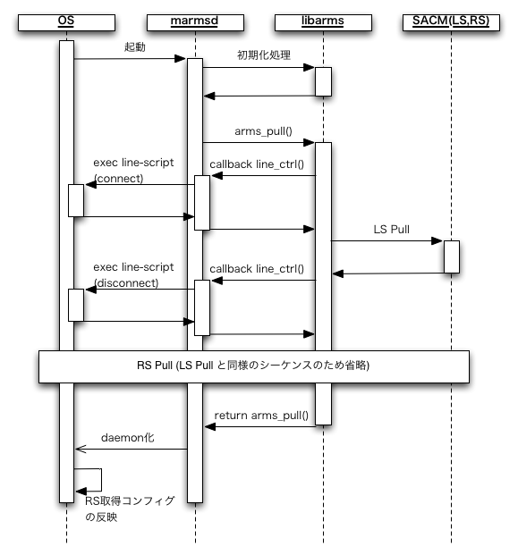
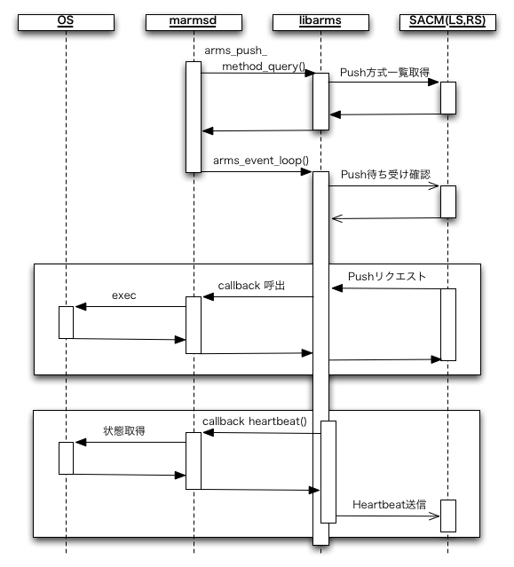

クライアント実装
このドキュメントでは libarms を実装した armsd の動作について解説する。
動作環境
- Linux(CentOS, Debian), NetBSD, OpenBSD, MacOSX 等の POSIX 系オペレーティングシステム
動作
Pull オペレーション
- LS スキップのキャッシュができる
- RS から与えられたモジュールそれぞれについて “script-start” が呼ばれる
Push オペレーション
- コマンド実行 (md-command)
- 実行可能。”script-command” が返す出力をそのまま返す。
- コンフィグ再取得 (pull-config)
- 実行可能。いったん利用中のすべてのモジュールに対して “script-stop” を呼んだ後、Pull オペレーションをやり直す。
- コンフィグ参照 (read-storage)
- 動作コンフィグ、バックアップコンフィグとも参照可能。コールバックスクリプトは無い。
$armsd/*-config/* として保持しているコンフィグを返す
- コンフィグ反映 (configure)
- 動作コンフィグの変更。”script-reconfig” が呼ばれる。
- デバッグ情報取得 (dump-debug)
- 実行可能。libarms の状態を返す
- トランザクション一覧 (check-transaction)
- 実行可能。コールバックスクリプトは無い。
- モジュール一覧 (read-module-list)
- 実行可能。コールバックスクリプトは無い。
- ステータス参照 (read-status)
- 実行可能。”script-status” が返す出力をそのまま返す。
- 注意: “script-status” が無い場合、しばらく Push 不能になるため実行しない方が良い。
- ステータス初期化 (clear-status)
- 実行可能。”script-clear” が呼ばれる。
- 再起動 (reboot)
- armsd を終了する。終了前にすべてのモジュールについて “script-stop” が呼ばれる。
- Ping (ping)
- 実行可能。IPv4/IPv6 両方に対応。
- スクリプトのタイムアウト秒数(コンフィグ変数の “timeout”)より長い時間がかかるような ping は実行できないことに注意。
- Traceroute (traceroute)
- 実行可能。IPv4/IPv6 両方に対応。
- スクリプトのタイムアウト秒数(コンフィグ変数の “timeout”)より長い時間がかかると打ち切られることに注意。
Heartbeat監視
- Heartbeatパケットを送信できる
- CPU利用率、メモリ使用量、ディスク使用率、トラフィック量パラメータを送信する
- どれか一つのパラメータの値の取得に失敗しても、他のパラメータの取得や、Heartbeat パケットの送信自体を取り止めたりはしない
- CPU利用率
- 前回の送信タイミングから今回送信時までの平均値を送信する。Heartbeat の1回目の送信時には CPU 利用率は含まない。
CPU 番号は 0 固定。
他の値は、”/proc/stat” の “cpu” 行の各値を x[i] で表したとき、idle=x[3], interrupt=x[5]+x[6], user=x[0]+x[1], system=x[2], other=x[4]+x[7]。
- メモリ使用量
- メモリ番号は 0 固定。used と free の値は “/proc/meminfo” から作る。free = MemFree+Buffers+Cached、used = MemTotal - free。
used/free の値は free(1) に合わせた
- ディスク使用率
- “/” (ルート) ディレクトリを含むディスクの利用率を送信する。statvfs(2) から得られる値を用いる。used は全ディスク容量から root が使える量を引いた値(fs.f_blocks - fs.f_bfree)。free は、一般ユーザが使えるディスク容量(fs.f_bavail)。
- トラフィック量
- eth0, eth1, eth2 インタフェースの in/out それぞれのパケット数/バイト数/エラー数の、前回の送信タイミングから現在までのレートを送信する。Heartbeat の1回目の送信時にはトラフィック量は含まない。存在しないインタフェースについては送信しない。
処理シーケンス
起動からコンフィグ取得までのシーケンス。一部簡略化。

Push待ち受け開始以後

起動
コマンドラインオプション
- -b <dir> : ユーザコンフィグファイルを書き出すディレクトリを <dir> に変更する。
- -d : デバッグオプション。ログがたくさん出る。デーモン化しない(バックグランドジョブにならない)。PIDファイルを書き出さない。廃止予定。
- -D : デーモン化しない。PIDファイルを書き出さない。
- -f <configfile> : armsd.conf のパスを指定する。無指定時のデフォルトは /etc/armsd/armsd.conf
- -h : usage を表示して終了する。
- -i <distid> : distribution-id を指定する。コンフィグファイル中の指定より優先する。
- -l <logfile> : ログを syslog の代わりにファイル logfile に書き出す。相対パスでの指定も可能。
- -p <port> : シンプル接続の時に、Push用の TLS 接続を待ち受けるポート番号を指定する。無指定時は libarms のデフォルト。
- -v : ログ出力を冗長にする。
- -V : armsd のバージョン情報を表示して終了します。
- -w : Pull 完了後にデーモン化する
その他
- 起動時に PID を /var/run/armsd.pid またはコンフィグ変数 “path-pid” で指定されたファイルに書き出す
- パーミションが無いなどのエラーで書けない場合、無視して動作を継続する
- 起動時に armsd 自身のバージョンと、リンクしている libarms と libhb のバージョンをログに書き出す
コンフィグファイルの書式
“<name> : <value>” とパラメータ名とその値を ”:” で区切って一行に記述します。
コンフィグパラメータ
- path-pid
- PIDファイルのパス名。
- path-root-ca
- ARMS Root CA の証明書ファイル。省略可能でその場合は armsd 自体に組み込まれた証明書を使う。
- distribution-id
- Distribution ID
- ls-sa-key
- LS-SA Key
- https-proxy-url
- HTTP Proxy の URL。省略された場合は proxy を介さず直接通信する。
- https-proxy-url-ls
- LS にアクセスする際に利用する HTTP Proxy の URL。https-proxy-url の指定に優先する。省略された場合は https-proxy-url の設定に従う。
- https-proxy-url-rs
- RS にアクセスする際に利用する HTTP Proxy の URL。https-proxy-url の指定に優先する。省略された場合は https-proxy-url の設定に従う。
- hb-disk-usage[012]
- heartbeat のディスク使用率を取得するパスを指定する
- hb-traffic-if[0123]
- heartbeat のトラフィック量を取得するインターフェースを指定する
コールバックスクリプト
- start <id> <version> <info> <configfile>
- reconfig <id> <version> <info> <configfile>
- stop <id>
- status <id> <requestfile> <resultfile>
- command <id> <requestfile> <resultfile>
- line <action> <line-type> <ifindex> [<id> <password> [<cid> <apn> <pdp>]]
- state-changed <old-status> <new-status>
- app-event
- post-pull
スクリプト一般
- コールバックスクリプトが標準出力に書き出すと、armsd の標準出力にそのまま書き出される
- コールバックスクリプトが標準エラー出力に書き出した文字列は、1000バイトを上限としてログに出力される
- スクリプトがコンフィグパラメータ “timeout” で指定した秒数以上たっても終了しなかった場合、タイムアウトでエラーとなる
- 「スクリプト」は、ELFバイナリ実行形式など exec(3) で実行できるファイルであればどのような形式でも良い。
- スクリプトは以下の環境変数を参照できる:
- ARMS_DISTRIBUTION_ID = armsd の distribution-id
ファイル
ファイル一覧
- /usr/sbin/armsd
- /etc/armsd/armsd.conf
- 標準コンフィグ。-f オプションで別ファイルを指定可能。
- /var/cache/armsd/state
- LS スキップのためのキャッシュ
- armsd.conf の path-state-cache で変更可能
- 書けなくても(エラーログは出しつつ)気にせず動く
- /var/run/armsd.pid
- 起動中の armsd の PID ファイル
- いまのところ書いて終了時に消すだけで使っていない。パーミションが無いなどのエラーで書けない場合、無視して動作を継続する。
- armsd.conf の path-pid で変更可能
armsd は一ホストに一つのプロセスのみ起動することを基本的な利用形態として想定している。しかし、コンフィグファイルの設定により、複数の armsd プロセスを一つのホスト上で同時に起動することも可能である。
その他
ログ
- デフォルトでは syslog の LOG_DAEMON にログを書き出す
- -l オプションを指定すると、指定したファイルにログを追記する。
ユーザコンフィグファイル
- armsd は動作中に /tmp/armsd.$$ ディレクトリまたは -b オプションで指定したディレクトリ以下にいくつかのファイルを作成する。
- backup-config/<module-id> : <module-id> のバックアップコンフィグ
- candidate-config/<module-id> : <module-id> のcandidateコンフィグ。コンフィグ変更中に一時的に使われる。
- running-config/<module-id> : <module-id> の現在動作中のコンフィグ。
- startup-config/<module-id> : <module-id> の起動時のコンフィグ
- tmp/<files> : 一時ファイル
- すべてのファイルは、コールバックスクリプト実行中に変更されることはない
- コールバックスクリプト実行中以外のタイミングでファイルの読み出しを行うと、不完全なコンフィグが読み出される可能性があることに注意すること。
ワーキングディレクトリ
- -b オプション
- 指定されたディレクトリが存在しなければ作成する。作成されたディレクトリは armsd 終了時に削除される。
- 指定されたディレクトリが既に存在していれば、終了時にも残したままとし、削除しない。ワーキングディレクトリ内のファイルもそのまま残るので、ユーザ側で削除することが期待される。
- -b オプションが指定されていない場合、armsd は “/tmp/armsd.NNNNN” (NNNNNはPID)というディレクトリを作成し、armsd 終了時に削除する。
バージョン番号
バージョン番号は A.B または A.B.C の形式とする。
バージョン 0.1 から 0.6 までは A.B 形式であり、
0.7.0 以降のバージョンでは A.B.C 形式である。
A, B, C はそれぞれ 1桁または 2桁の非負整数値とする。
それぞれの番号をインクリメントする条件は以下とする。
- A : 仕様に大きな変更を加えた場合にインクリメントする。後方互換性を失うような変更を含む。
- B : 後方互換性がほぼ保たれる程度の仕様の変更があった場合にインクリメントする。
- C : 仕様の変更を伴なわないリリースを行う場合にインクリメントする。原則として、互換性に影響を及ぼすような動作の変更を含まない。
変更履歴
0.9.0
- libarms-5.20 に対応
- -D, -v, -w を追加, -d を非推奨
- armsd.conf のパラメータを変更
- ログ出力の見直し
- いくつかの不具合修正